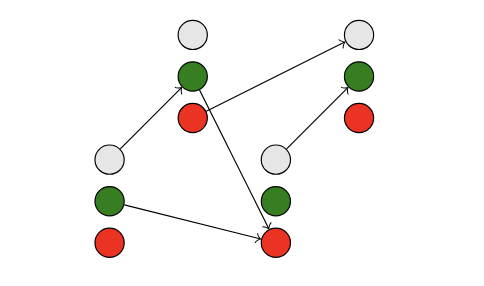

Preface
The shortest path problem is a fundamental question in graph theory and optimization. Given a graph with weighted edges, the goal is to determine the most efficient route between two nodes. This problem has widespread applications in areas like navigation, network routing, and artificial intelligence. Algorithms such as Dijkstra’s and Bellman-Ford provide efficient solutions under various conditions, making shortest path computations a cornerstone of theoretical and applied computer science.
One particularly interesting variation is the Bulgarian Path Problem, which introduces additional constraints beyond simple distance minimization. This problem is relevant because it reflects real-world scenarios where paths are influenced by more than just length—consider factors like tolls, fuel consumption, or road closures. Studying reductions to the shortest path problem, such as those involving the Bulgarian Path Problem, provides deeper insights into complexity theory and algorithmic efficiency, helping researchers develop more robust and adaptable pathfinding algorithms.
This blog post explores how the Bulgarian Path Problem can be reduced to the shortest path problem, offering a fresh perspective on constraint-driven graph traversal.
Problem 1
In this problem, you are given as input a directed graph G = (V, E), where each directed edge e ∈ E has a real-valued weight w(e),
and a color c(e) ∈ {W, G, R} (for white, green, and red). A Bulgarian path in G is a path that alternates edges
with colors W, G, and R, in this order.
Assume that G has no negative weight Bulgarian cycle, i.e., there is no Bulgarian path in G whose first and last vertex are the same,
and the sum of the edge weights along the path is negative.
We define δBG(s, u) to be the smallest weight of a Bulgarian path from s to u. The goal in this question is to compute
the smallest weight Bulgarian paths from a given source vertex s to every other vertex in V.
Solution
We transform our graph as follows:


For every node in G, in G' we replace it with three nodes (Red, Green, White). Every red edge in G is transformed to an edge (red → white),
every white edge is transformed to (white → green), and every green edge is transformed to (green → red).
Theorem
Every path starting at a white node in G' is a Bulgarian path in G, and every Bulgarian path in G is represented as a path in G'
starting with a white node.
Proof
The edge mapping function is bijective, meaning each edge in G has a corresponding edge in G' and vice versa. We define a color function
c(k) based on the index modulo 3. Given a Bulgarian path p in G, we construct a path p' in G' such that it follows the Bulgarian path structure.
Since edges in G' are mapped systematically, any path starting at a white node in G' will follow the same alternating pattern as a Bulgarian path.
Algorithm
To find the minimal Bulgarian path from u to v, we run the Bellman-Ford algorithm on G' starting from uwhite.
Since we assumed there are no negative weight Bulgarian cycles in G, there are no negative weight cycles in G'.
Then, we select the minimum distance to vwhite, vgreen, or vred.
Time Complexity
The time complexity is the same as running Bellman-Ford on G', which has 3n nodes and m edges. Thus, the running time is O(nm).